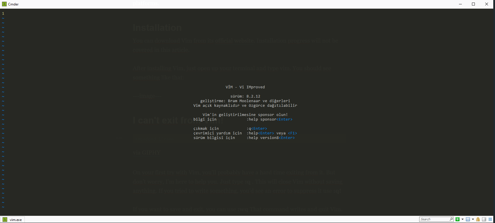

Vim is a magical text editor. It’s a cross-platform editor so, it’s available on most platforms.
Installation
You can download Vim from its official website. Installation progress will not be covered in this article.
After installing Vim, just open up your terminal and type vim. You should see something like that: 
I can’t exit from Vim!

On your first try with Vim, you’ll probably have a hard time exiting from it. But don’t worry, I’m here to help you. Just type :q . This will close Vim without saving anything. If you tried to write something, you’d see an error to suppress it use :q!
If you want to save and exit, you can use :wq That command writes and quit Vim.
Let’s start
Vim has three different modes. Normal, Insert, and Visual mode. In the normal mode, we can move around the editor with keys.
To move your cursor up, press k,
go down with j,
go left with h,
and go right with l.
As I said before, we have three different modes. When you launched Vim, it starts with normal mode. You can go to insert mode with** i**. Now you can insert texts into your document. Insert mode works like your old editors. You can do the same things in this mode. Ok, what if I want to go back to normal mode? Simple, just press Esc and you’re in normal mode.
Walking char to char is cool but how can I jump?
If you want to move word to word you have some shortcuts:
w => jump forwards to the start of a word
b => jump backwards to the start of a word
gg => go to first line
G => go to last line
How to remember all these shortcuts?
Well, you can’t remember all these shortcuts and commands. You have to start using them to make it muscle memory. Also, for the start you don’t need all, if you learn some basic commands, you can do the similar things like your IDE.